How DeepTap works
Understand how the app auto-clicks, recognizes the screen and handles popups — from the mental model to hands-on steps.
Getting Started (about 5 minutes)
New to DeepTap? Pick your level — each one builds on the previous. Start at Basic; come back for Advance and Expert when you're ready.
Zero to your first working auto‑click in about five minutes — no jargon.
▶ Watch: grant the two permissions, record four taps on the Sample target, set the loop count, run it
💡 Need a safe target to practice on? Switch to the 🎮 Sample tab (top of this page) in Basic mode and auto-press the four +5 squares.
Step 0 — One‑time setup (permissions)
DeepTap needs two Android permissions before it can tap for you. You grant these only once — the app prompts you the first time.
| Permission | Why it's needed | Where to enable |
|---|---|---|
| Accessibility Service | Lets DeepTap perform the taps & swipes on your behalf. | Android Settings → Accessibility → DeepTap → turn On |
| Display over other apps | Shows the floating control toolbar on top of whatever app you are automating. | Android Settings → Apps → DeepTap → Display over other apps → Allow |
Your first auto‑click
- Open DeepTap and pick a script. The Home screen lists your scripts. Tap + New to create your first script.
- Press START on the script. A small floating toolbar appears over the screen — your control panel while DeepTap runs on top of any other app.
- Add a tap. On the toolbar tap ＋ Click. A green numbered handle appears — drag it to the exact spot you want tapped. Add more taps, or a ＋ Sweep (drag gesture), the same way.
- Set the loop count. Choose how many times to repeat all the actions (for example, 50). Open ◈ Actions on the toolbar to review or reorder them.
- Play & Stop. Press ▶ Play to run the script in a loop; press ■ Stop to end and return to editing.
Tap only when something appears. In Basic you tapped fixed spots, blindly. But some buttons show up only now and then — a fixed tap either misses them or hits empty space. Here you teach DeepTap to see that button first: you build a detector, crop a small picture of the button (a template), and then make one of your actions conditional — it fires only while the detector sees that button on screen.
▶ Watch: build a detector for the Sample’s ×2 button, crop its template, then make an action tap it only when it appears
💡 Practice target: the 🎮 Sample tab in Advance mode shows a ×2 / ÷2 button only after the four squares are pressed — exactly the “appears sometimes” case used in the video.
What the video walks through
- Create the detector. Go to the DETECTORS tab → + NEW, give it a name (in the video: “x2 detector”) and press SAVE. It already comes with one button,
BTN_MAIN, set as the identifier — nothing else to fill in. - Place the region. Saving also creates a placeholder box on screen. Drag it over the button you want recognised and size it with the WIDTH / HEIGHT sliders (the ± nudges move it 1px at a time).
- Crop the template. With the button visible on screen, press Crop. The picture inside the box is saved — that's what DeepTap compares against, and it appears in the TEMPLATE preview.
- Make an action conditional. Open the action that should tap it, switch to the RULE tab, turn on ADVANCED, then set WHEN = your detector, THEN = click its button, OUTCOME = Continue.
- Run. The action now fires only while the detector actually sees that button; the rest of the loop keeps running as before.
Build your own detectors & processes. Go beyond popups: teach DeepTap to recognize any screen or button, then script smart IF‑THEN behavior — tap a button when it appears, wait for a screen to load, branch on what's visible, chain steps together.
▶ Watch: two detectors (reward / trap), a two‑step process that accepts one and cancels the other, attached as post‑loop
💡 Practice target: the 🎮 Sample tab in Expert mode adds the +50/−50 offer popup — ideal for building a detector + process to handle it.
What the video walks through
- Create a Detector. Name it, add one or more buttons, and crop a template for each so DeepTap can recognize it on screen.
- Create a Process. A mini rule engine: WHEN a detector matches → THEN do something (tap a button, wait, run another process…) → OUTCOME (Continue, Reset the loop, or Stop).
- Attach & run. Hook the process to an action's rule or as the script's post‑loop, then press Play.
How DeepTap Works: The Mental Model
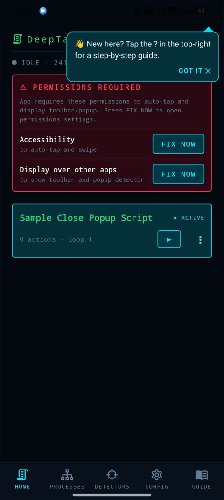
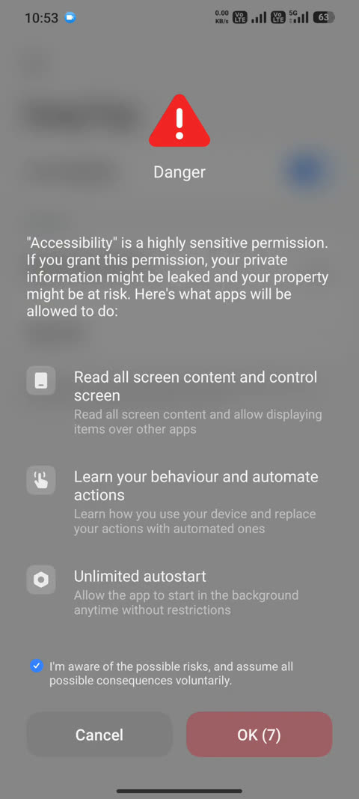
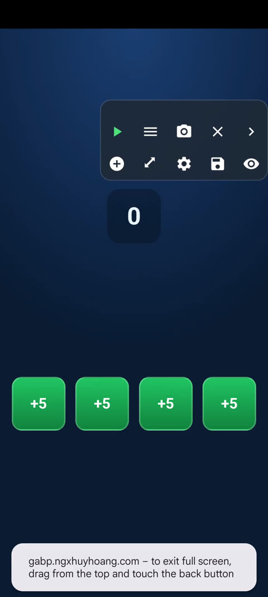
DeepTap is an autoclicker for Android that lets you record and replay taps and swipes on your phone screen, then run them automatically in loops. But DeepTap is smart: it can watch for things on screen and make decisions about what to do next—like closing a popup or tapping a button when it appears.
To understand DeepTap, you need to know four core ideas:
1. Script: Your Recorded Actions
A Script is a sequence of taps and swipes you record. Each action is saved with its exact screen position (coordinates). When you press Play, DeepTap repeats these actions over and over, as many times as you set the loop count. Think of it like a macro: tap here, swipe there, tap again.
- Click: a tap at a specific position on screen
- Sweep: a drag from one position to another
- Loop count: how many times to run all the actions (≥1). Set to 0 to disable the script without deleting it.
Each script has a name and can hold many actions. You can create multiple scripts and switch between them.
2. Detector: Recognizing What's on Screen
A Detector is DeepTap's way of recognizing things that appear on your screen—like a popup or a close button. Instead of blindly tapping the same spot over and over, DeepTap can see what's there and react.
How does a detector work? It compares a small reference image (called a Template) against what's currently on your screen, looking within a specific area (the Region). If they match closely enough, DeepTap knows that thing is present. For example:
DeepTap seeds 4 editable sample detectors to learn from (SIMPLE Popup1, SIMPLE Popup2, ADVANCE Popup Close Button, ADVANCE Popup Gone), and you can create more of your own.
3. Process: Smart Decision-Making
A Process is a mini state machine that uses detectors to decide what to do. It's a sequence of IF-THEN rules. For example:
- IF you detect a popup THEN click the target button THEN close any popup that appears THEN Continue the loop
- IF no popup is found THEN Reset the loop counter and start over
After each loop of your script, DeepTap can run a process to check the screen and make a decision:
- Continue: keep looping
- Reset: start the loop count from 1 again
- Stop: end playback
Processes are like recipes: you write down the steps, and DeepTap follows them every time.
4. Region + Template: Where to Look and What to Match
A Region is a rectangular area on your screen. A Template is a small screenshot (a PNG image) of what you're looking for. Together, they tell DeepTap: "Look inside this rectangle and compare what you see to this image."
| Region | Position (x, y) and size (width, height) of the area to scan |
| Template | A reference image (PNG) of what you want to find |
When DeepTap scans, it measures how well the template matches what's in that region—a score from 0% to 100%. If the score meets the detector's threshold (typically 90%), it's a match.
The Two Modes: Edit Mode and Play Mode
Mode 1: Edit Mode — Building Your Script
When you open DeepTap, you start in Edit mode. This is where you:
- Create and name scripts
- Record clicks and swipes by tapping a floating toolbar button
- Preview your actions on screen (with clickable handles and knobs)
- Set the loop count and time limits
- Attach a process to run after each loop (like "tap a button when it appears then close a popup")
The app stays in the foreground, and you see a floating toolbar with buttons to add actions, view your script, and start playing.
Mode 2: Play Mode — Autoclicking in the Background
When you press ▶ START on a script, DeepTap switches to Play mode:
- The DeepTap app slides to the background (you can see the app you're automating)
- The floating toolbar stays on top, now showing Play/Stop and a live log of what DeepTap is doing
- DeepTap executes the script actions in a loop, scanning the screen between loops to check for detectors
- If a detector matches, the attached process runs (e.g., close a popup, tap a button when it appears)
- Press
⏹ STOPto end playback and return to edit mode
The Five Bottom Tabs: Navigate DeepTap
At the bottom of the DeepTap app, you'll see five tabs. Tap any one to switch views:
| Tab | Icon | What It Does |
|---|---|---|
HOME |
⌂ | Your script list. Tap a script name to activate it. Press ▶ to start playing. Tap ⋮ to rename, duplicate, delete, or edit the post-loop process. |
PROCESSES |
≡ | View and edit decision-making flows (IF-THEN rules). Design your own process, or copy one from another device. |
DETECTORS |
◎ | Manage screen-recognition patterns. Capture templates, set regions, and test detectors before adding them to a process. |
CONFIG |
⚙ | Device settings: server connection, scan interval and click delay tuning (Timing tab), screenshots and logging (More tab). Auto-stop limits (time, battery) are per-script — set them in View Script. |
GUIDE |
📖 | Opens this user guide (served from your trainer server). |
The Floating Toolbar: Your Control Center
When you're in Edit or Play mode, a small toolbar floats on top of other apps. It has:
Add Click/Add Sweep: Record a new action (only in Edit mode)⚙ View Script: Open a native overlay showing all your actions as draggable tiles, a live log, and per-script settings (loop count, time limit, battery stop, lock on finish)⟳ Test PROC: Manually run the current process once (detector scan only; useful for debugging)▶ / ⏹ Play / Stop: Start or stop the playback loop- Live-log strip: A thin panel showing real-time messages from DeepTap as it runs (e.g., "Loop 1/5 · Action 3 · 2s", "Detected a popup", "No match, pressing Back")
A Typical Setup Flow
Here's how you'd set up DeepTap for the first time:
- Create a script: Tap
HOME→+ NEW - Record actions: Tap
Add ClickorAdd Sweepon the floating toolbar. Tap/drag on the target app's screen to place the action. Repeat until you've recorded a full "cycle" (e.g., tap a button 5 times). - Set loop count: Tap
⚙ View Script→ scroll toLOOP COUNT→ enter how many times to repeat (e.g., 10). - Create a detector (optional): Tap
DETECTORS→+ NEW. Crop a screenshot of something you want to recognize (like a popup button). Save it as a template. - Create or pick a process: Tap
PROCESSES→ pick an existing one or create new rules (e.g., "If popup appears, tap the target button, then close the popup"). - Attach the process: Go
HOME→ tap the script's⋮menu →Edit post-loop→ toggle ON and pick your process. - Test: Press
▶ STARTand watch the live log. Let it run a few loops. Press⏹ STOP. - Refine: If actions are in the wrong spot, tap
⚙ View Scriptto edit each action's coordinates. If a detector isn't matching, goDETECTORSand adjust the region or template.
SCAN INTERVAL (ms) and CLICK DELAY (ms) on the Timing tab of CONFIG if detections or taps aren't reliable. When debugging, turn on DETAIL LOG (CONFIG → More) for a readable step-by-step engine trace.
Scripts: Create and Manage Automation Sequences
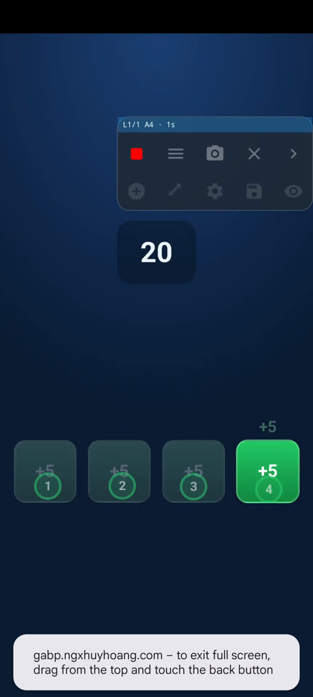
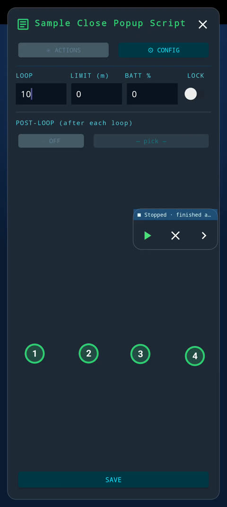
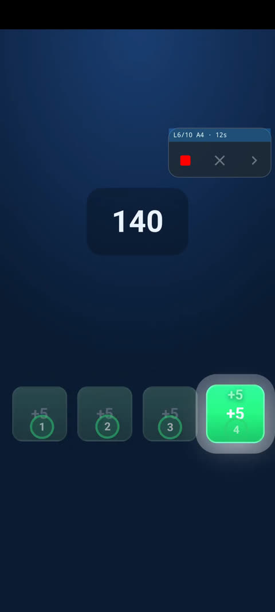
A script is a list of taps and sweeps that DeepTap records and plays back on your phone. DeepTap keeps all your scripts together in one library so you can switch between them, modify them, and run them whenever you need.
The Script List (Home Screen)
When you open DeepTap, you see the script list. Each row shows one script with all the information you need:
- Script name — tap the name to make it your active script (or use the menu).
- Metadata — number of steps (taps and sweeps), loop count, and whether post-loop is enabled.
- START button — tap
▶to begin playing the script immediately. DeepTap shows the toolbar and moves itself to the background so you can see the app you are automating. - Menu button — tap
⋮(three dots) to rename, duplicate, delete, or edit post-loop settings for this script.
Tip: A row highlighted with a cyan border is the active script — the one that will play when you press START. You can have many scripts, but only one active at a time.
Creating a New Script
Tap Add New in the header. DeepTap creates a script called Script 2, Script 3, etc., and makes it active. The new script starts empty — no steps yet. Tap ▶ to open the toolbar and begin adding steps.
Adding Steps (Taps and Sweeps)
When you press START on a script, a floating toolbar appears on your screen. From here you add and play steps:
- Tap to add a click — press the tap icon, then tap anywhere on the screen. DeepTap records that exact spot as an absolute coordinate. Tapping multiple times adds multiple clicks to the end of your script.
- Sweep to add a swipe — press the swipe icon, then drag your finger from start to end on the screen. DeepTap records both points and the time taken to complete the swipe.
- Remove the last step — tap the minus icon to delete the most recently added step.
Important: Steps are recorded in absolute screen coordinates. If you record a tap at position (500, 1000) on a phone with a 1080×2400 screen, that same tap will attempt to hit (500, 1000) on any device, regardless of screen size. If you run the script on a different phone, taps may miss their targets. Re-record or edit steps if you switch devices.
Organizing and Reordering Steps
To view, reorder, or modify individual steps, tap the list icon in the toolbar. This opens the step configuration panel where you can:
- Drag to reorder — hold and drag any step up or down to change the execution order.
- Tap to expand — tap a step to reveal its details (coordinates, hold time, swipe speed, delay after the step).
- Toggle enable/disable — each step has a checkbox. Disabled steps are skipped during playback but remain in your script. When you play, only enabled steps run.
- Add or remove — tap the tap or swipe icons at the bottom to add new steps; tap the minus icon to remove the last step.
Loop Count — How Many Times to Run
Next to the play button in the toolbar is a field showing the loop count. This controls how many times DeepTap repeats your entire script:
- Enter
0to run forever (infinite loops). - Enter any positive number (1, 5, 100, etc.) to run exactly that many times.
Example: If your script has 3 steps and you set the loop count to 5, DeepTap will run all 3 steps, then start over from step 1, repeating 5 times total.
Script Menu — Rename, Duplicate, Delete, Post-Loop
Tap the menu button ⋮ next to a script row. You'll see four options:
- Rename — change the script's name to something memorable (e.g., "Tap Loop", "Spin Wheel").
- Duplicate — create an exact copy of the script with a new name (e.g., "Tap Loop copy"). Useful for testing variations without losing the original.
- Edit Post-Loop — configure what DeepTap does after each loop finishes. See the Post-Loop section below.
- Delete — remove the script permanently. DeepTap prevents you from deleting your last script — you must always have at least one.
Post-Loop: Run a Process After Each Loop
After your script finishes one complete loop (all steps done), DeepTap can automatically run a post-loop process — any Post-Loop-Eligible process (e.g. the bundled SIMPLE Close Popup Process) that handles events like popups or popup closures.
To set this up, tap ⋮ > Edit Post-Loop:
- Toggle
Enableon or off. - If enabled, choose which process to run from the list. Available processes depend on your DeepTap version.
- Tap Save to apply changes.
Example: You have a script that repeats a task each loop. After each loop, a popup might appear. Enable post-loop and select a process (e.g. the bundled "SIMPLE Close Popup Process") — DeepTap will handle that popup automatically after each loop, then continue without interrupting you.
Copying Scripts from Another Device
You can copy scripts from another device where DeepTap is installed. Tap Copy from in the header:
- Pick a device — DeepTap shows devices that have uploaded their scripts to the server. Tap one to see its scripts.
- Check the status — each script shows a badge:
NEW— script doesn't exist on this device; tapCopyto add it.HAVE— you already have this script with identical steps and settings; copying is not needed.DIFF— you have a script with the same name but different steps or settings (e.g., different loop count). TapCopyto overwrite yours with the remote version.
- Confirm and copy — tap
Copy, confirm in the popup, and DeepTap downloads the script to your device.
Tip: Copying is useful when you've tested a script on one phone and want to quickly set it up on another, or when a friend shares a working script.
Starting and Stopping Playback
Once you have a script with steps, press ▶ START to begin:
- DeepTap shows the floating toolbar on top of that app.
- It runs through all enabled steps in order, then loops back if the loop count is more than 1.
- If post-loop is enabled, DeepTap runs the selected process after each loop finishes.
- A red
⏹ Stopbutton appears at the bottom of the screen. Tap it anytime to stop immediately.
DeepTap continues running in the background — you can use other apps or put your phone in your pocket. The script keeps playing.
Warning: Do not uninstall DeepTap or revoke permissions (Accessibility Service or Overlay) while a script is running. This may cause the phone to lock or the script to stop unexpectedly. Always tap ⏹ Stop first if you need to change settings.
Detectors: Recognize Popups and Screens
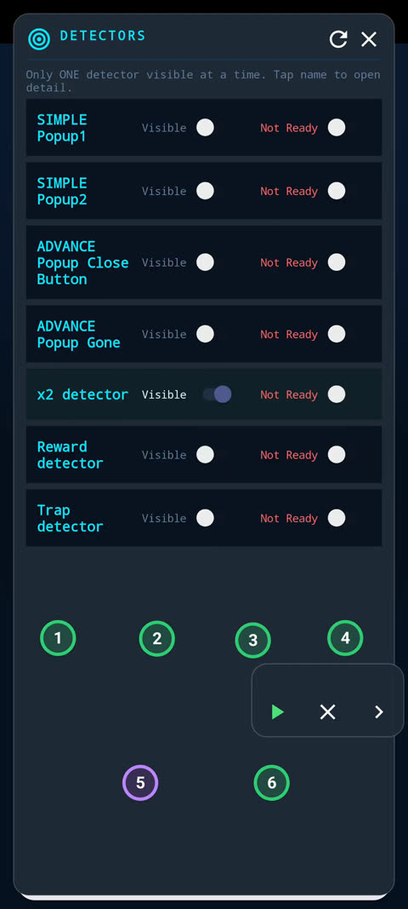
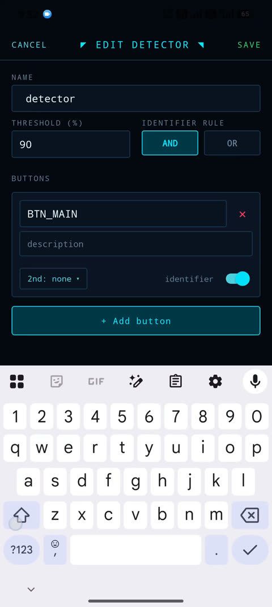
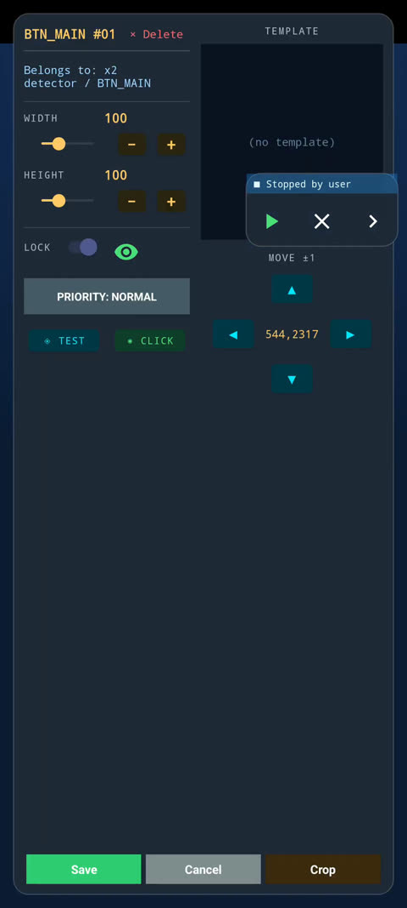
A detector teaches DeepTap how to recognize when a specific popup or screen appears on your phone. It works by looking for visual markers (like a "close" button or a unique icon) in a specific region of the screen. Once it recognizes them, DeepTap can trigger actions or skip to the next step in your script.
How a Detector Works
Every detector has three parts:
- Buttons — visual markers you want to find (like a popup close button or a target button). Each button has a code name (e.g.,
BTN_CLOSE) and a description. - Identifier Rule — which buttons must match before the detector "fires". Choose
AND(all marked buttons must be found) orOR(any one marked button found is enough). - Threshold — how similar the on-screen button must look to the template you captured. Default is 90% (0.90). Higher = stricter matching.
Sample Detectors (Editable Seed Data)
DeepTap has no hard-coded detectors. On a fresh install it seeds 4 sample detectors — ordinary data you can edit, copy or delete like any other (the 📦 Sample backup carries them too):
- SIMPLE Popup1 and SIMPLE Popup2 — recognize a popup (identifiers
BTN_POPUP1/BTN_POPUP2, plus the action buttonBTN_COLLECTto tap). - ADVANCE Popup Close Button — recognizes the × button that closes a popup, using the marker
BTN_CLOSE. - ADVANCE Popup Gone — recognizes that a popup has gone away and you're back on the screen behind it (marker
BTN_GONE).
These are used by the bundled SIMPLE/ADVANCE Close Popup processes. You can also copy a sample detector's regions and templates from another device so you don't have to re-crop on this device.
Create or Edit a Detector
Open LIST DETECTOR in the bottom menu to manage your detectors:
- Tap + NEW to create a new detector, or tap an existing detector name to edit it.
- Enter a detector name and set the Threshold (%) — usually 90 is fine. Lower values (e.g., 70) are more forgiving if the button looks different each time; higher (95+) are stricter.
- Choose your identifier rule: AND or OR.
- In the Buttons section, tap + ADD BUTTON to add each visual marker you want to find.
- Enter a button code (e.g.,
BTN_CLOSE,BTN_TARGET). - Add a description (what is this button?).
- Optional: choose a fallback matcher (2nd match) from the dropdown — helps if the button has high contrast but a variable background.
- Toggle the Identifier switch to mark which buttons decide if the detector fires. At least one button must be marked.
- Enter a button code (e.g.,
- Tap SAVE.
Crop a Template (Region)
After you save a detector, you must capture a visual template so DeepTap knows what to look for. This happens in the LIST DETECTOR overlay (the green region-drawing UI):
- Tap the detector name to open Current Detector — you'll see a list of the detector's buttons.
- Tap a button to focus on it. A green box appears on your screen showing the region DeepTap will scan.
- Drag and resize the green box to frame the button or marker you want to capture:
- Use the sliders in the popup to adjust position (X, Y) and size (width, height). Each slider goes up to 300 pixels.
- Or drag the box directly on screen.
- Tap CROP to take a screenshot of that region and save it as your template.
The template is now stored on your phone for this detector's button. DeepTap will match this exact image when it scans the screen during playback.
Badge Indicators
When you copy a detector from another device, the picker shows a badge next to each detector:
- NEW (green) — the source detector doesn't exist on this device yet.
- HAVE (gray) — you already have a detector with the same name and same configuration (buttons, rule, threshold).
- DIFF (orange) — you have a detector with that name, but its configuration is different (different buttons or rule).
Use Your Detector
Once you have a detector with a cropped template, you can use it:
- As a condition in an action: edit a click or sweep action, go to the DETECTOR tab, and pick your detector from ONLY RUN IF. The action only runs if this detector matches.
- In a dynamic process rule: use the detector in a WHEN condition or as a target for the ClickButton action.
- In the Detector overlay: inspect and adjust regions on the fly during a test run.
| Task | Steps |
|---|---|
| Add a new detector | LIST DETECTOR → + NEW → name + buttons → threshold + rule → SAVE |
| Crop a template | Open detector in LIST DETECTOR overlay → pick button → drag green box → CROP |
| Copy detector from another device | LIST DETECTOR → ⧉ COPY → pick device → pick detector → COPY |
| Use detector in an action | Edit action → DETECTOR tab → ONLY RUN IF → pick detector |
Understanding Processes in DeepTap
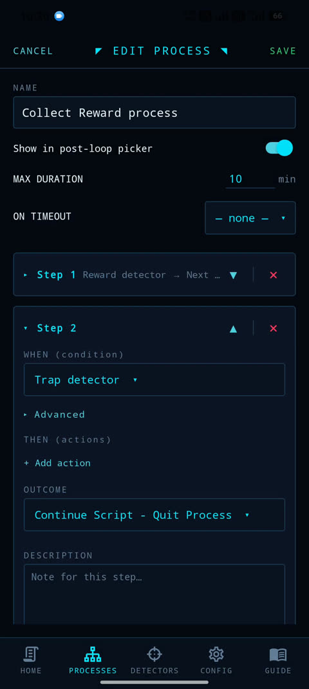
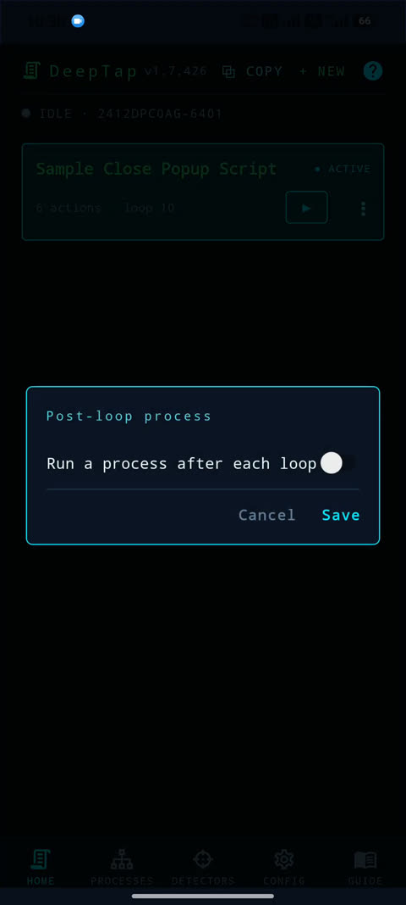
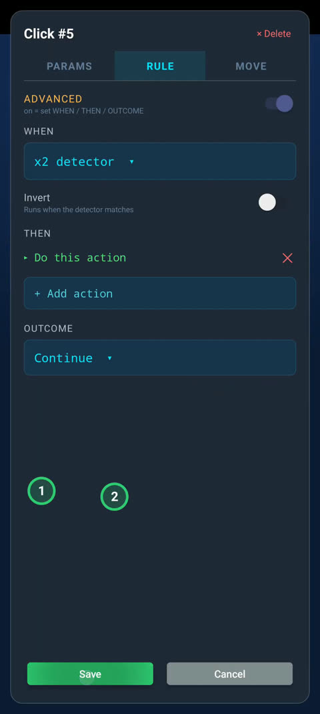
A process in DeepTap is a mini decision-maker that runs automatically after each loop of clicks. Think of it as a series of "if this happens, do that" rules that DeepTap checks in order. The first matching rule wins and the others are skipped.
Why Use Processes?
Processes handle unexpected situations that pop up during play:
- Closing a popup that appears after an action
- Handling popup messages or dialogs
- Deciding when to stop or reset the script
- Redirecting DeepTap's actions based on what's on screen
How a Process Works: WHEN → THEN → OUTCOME
Every rule in a process has three parts:
| Part | What it Does | Examples |
|---|---|---|
| WHEN (Condition) | A check DeepTap makes on screen. If it matches, the rule fires. | "If a popup close button appears" or "If battery drops below 20%" |
| THEN (Actions) | One or more things DeepTap does in sequence when the condition matches | Wait 500ms, then click the close button |
| OUTCOME (Flow Control) | What DeepTap does after the actions finish | Keep looping, reset to the start, or stop the script |
WHEN: Conditions
DeepTap checks the condition against what's currently on screen:
- Always — This condition always matches. Useful as a fallback rule at the bottom of your process to handle cases nothing else caught.
- Detector match — DeepTap looks for a named detector (a region you taught it to recognize, like "popup_close_button"). You can pick any detector you've created in the Detector section.
- Invert — Toggle this on to reverse the condition. For example, "if popup_close_button does NOT appear" instead of "if it does".
- Battery level — DeepTap checks the device battery and triggers if it's below or above a percentage you choose (default 20%).
THEN: Actions
When a condition matches, DeepTap runs its actions in order, one after another:
- Wait — Pause for a number of milliseconds (1000 ms = 1 second). Useful to let animations finish before clicking.
- Click button — Click a specific button belonging to the detector in your WHEN condition. When you pick "Click button", DeepTap shows you a list of buttons available on that detector; pick the one to tap.
- Send Back — Press the device back button one or more times. Useful to dismiss dialogs.
- Send Home — Press the home button, returning to the home screen.
- Lock Screen — Lock the device immediately.
- Run Process — Call another process inline, like a nested mini-script. When that process finishes, control returns to the current one. If the nested process ends with
StoporReset, those results short-circuit the parent process too.
OUTCOME: What Happens Next
After all actions finish, the outcome tells the playback engine what to do:
- Continue — Start the next playback loop immediately. Use this when you've handled the situation and DeepTap should keep doing its normal task.
- Next Step — Skip ahead to the next step in this process. DeepTap re-scans the screen and checks the next step's condition.
- Go to Step N — Jump to a specific earlier or later step. DeepTap re-scans and checks that step's condition. Useful for loops: a step can jump back to itself until a condition changes.
- Reset — Restart the main playback loop from the beginning. Useful when the screen changed significantly.
- Stop — End the script run. The playback engine stops and returns to idle.
- Chain → [Process name] — Run another process after this one finishes. When you pick this outcome, choose which process to run. Common use: after a process finishes, chain to the "ADVANCE Close Popup Process".
Creating and Editing a Process
In the Processes screen:
- Tap
+ Newto create a new process, or tap an existing process name to edit it. - Enter a name for the process (e.g., "Handle Popups").
- Configure
Post-Loop Eligible— turn this on if you want this process to run automatically after every loop (as a post-loop hook). Turn it off if this process should only run when called by another process via theChainoutcome orRun Processaction. - Set
Max Duration (minutes)— the longest this process is allowed to run. If it takes longer, DeepTap stops it and returnsContinue. Default is 10 minutes. This prevents infinite loops. - Tap
+ Add Stepto add a new rule (step). - Tap a step to expand it and edit the WHEN, THEN, and OUTCOME.
- Reorder steps by tapping the up/down arrows.
- Tap
Savewhen done.
Non-Matching Steps
If a step's condition does not match, DeepTap skips that step's actions without firing them and moves to the next step. This makes it efficient: only the first matching step runs; everything else is bypassed.
The Bundled Sample Processes: SIMPLE & ADVANCE Close Popup
DeepTap seeds two editable sample processes that demonstrate the detector→process system end to end. They are ordinary data — you can edit, copy or delete them, and the 📦 Sample backup carries them too. Both are Post-Loop Eligible, so either can be attached as a script's post-loop hook.
SIMPLE Close Popup Process — one step per popup: WHEN the SIMPLE Popup1 (or SIMPLE Popup2) detector matches → tap its BTN_COLLECT button → Run Process → ADVANCE Close Popup Process to dismiss whatever popup follows.
ADVANCE Close Popup Process — a goto-poll loop that hunts the popup's close (×) button:
- The
ADVANCE Popup Gonedetector must match twice before the process finishes: the first sighting arms it, then it waits 3 seconds and re-checks to confirm the popup really is gone. - The
ADVANCE Popup Close Buttondetector (the ×) — when found, it taps it; on every 3rd sighting it sends Back instead of tapping. - × not found — it sends 3 Backs 200 ms apart to dismiss intermediate dialogs.
- Max duration 180 s — if the popup still isn't gone by then, it runs ADVANCE Popup Timeout: take a screenshot, send a Discord notification, and stop the script.
Use them as templates for your own detect-then-act flows: chain to the ADVANCE closer from any process that needs to dismiss a popup after acting, or copy either one and adapt it.
Copying a Process from Another Device
If you've set up processes on another device and backed them up to the cloud, you can copy them:
- In the Processes list, tap
⧉ Copy From. - Pick the device whose processes you want to copy.
- DeepTap scans the selected process for dependencies — detectors or child-processes it references.
- A badge shows the status of each process:
- NEW (green) — This process doesn't exist on your device yet. DeepTap will copy it.
- DIFF (orange) — A process with the same name exists locally, but it's different. DeepTap offers to overwrite it.
- SAME (gray) — This process already exists locally and is identical. Nothing to copy.
- Tap
Copy. If the process depends on detectors or child-processes you don't have, DeepTap offers to copy those too in a cascade. This is often faster than recreating them manually.
Process Nesting with Run Process
Processes can call other processes using the Run Process action. There is a depth cap to prevent infinite recursion, and each process has its own per-invocation Max Duration limit. When a nested process returns Stop or Reset, that result is passed up to the parent immediately.
Using a Process as a Post-Loop Hook
If a process has postLoopEligible = true, you can attach it to your script as a post-loop hook in the Script Settings. After every playback loop, DeepTap automatically runs that process. The process's OUTCOME determines whether the loop continues, resets, or stops.
Default Max Duration
The default max duration for a new process is 10 minutes (600,000 milliseconds). You can lower this if you're worried about loops, or raise it if your process legitimately needs to run longer. Set it to 0 to disable the timeout (unlimited).
AI Assistant — Build Processes with ChatGPT
On the PROCESSES screen a floating AI button opens the AI Assistant — a helper that lets an AI chatbot (e.g. ChatGPT) design or modify your processes and detectors for you. You describe what you want in plain words, in any language, and paste the AI's answer back into DeepTap:
- COPY FOR AI — puts an instruction prompt plus your current processes and detector schemas on the clipboard.
- Paste into ChatGPT — paste the clipboard into any AI chat and describe the automation you want.
- Paste the answer back + CHECK — DeepTap validates ids, references and structure, then shows a summary of what would change.
- APPLY — DeepTap saves a safety backup first, then merges the changes by id.
Because merging is by id, existing items are updated in place and new ones are added — nothing else is touched. Newly created detectors arrive with placeholder regions: open each one, drag the region over the real button and CROP a template before running. If anything looks wrong after APPLY, restore the safety backup.
Timing and Performance: Make DeepTap Fast (or Patient)
DeepTap has four knobs on the Timing tab of CONFIG that control how quickly it scans the screen, waits before tapping, and how much memory each scan uses. These settings let you tune DeepTap's speed and accuracy for your specific device.
The Four Settings
| Setting | What it does | Default | Range |
|---|---|---|---|
SCAN INTERVAL |
Minimum time between screenshots (floor: 333ms, set by Android) | 500 ms | 333–5000 ms |
CLICK DELAY |
Wait time after detecting a button before tapping it | 500 ms | 0–5000 ms |
RE-SCAN AFTER |
How stale a screenshot can be before DeepTap re-captures (0 = off) | 500 ms | 0 or 500–60000 ms |
MATCH RESOLUTION |
Shrink screenshots before matching to save RAM (0 = full-res, no shrink) | 0 (off — full resolution) | 0 or 480–4000 px |
Why These Matter
SCAN INTERVAL is a hard floor enforced by Android's accessibility layer. If you fire two screenshots back-to-back faster than 333ms apart — which happens when a child process runs inside a parent process, or when DeepTap double-checks a screen — the second one fails silently and returns nothing. This was mistakenly blamed on the old Slow-Log toggle (since replaced by DETAIL LOG) before the problem was understood: its ~1-second pause accidentally spaced out the two screenshots enough to work. Now SCAN INTERVAL fixes it automatically. Don't set it below 333ms; Android will ignore it anyway.
CLICK DELAY pauses between the moment DeepTap detects a button and the moment it taps. This is necessary because:
- A button that just appeared may still be animating in and not yet interactive.
- A tap fired immediately after a screenshot can be cancelled by the system.
Set to 0 to disable. On fast devices, you can lower this to 100–200ms. On slow devices, raise it to 1000ms or more.
RE-SCAN AFTER handles a subtle problem: if a process takes a long time inside a single step (like a long Wait or a child process that keeps polling), the screenshot DeepTap took at the top gets stale. When it finally tries to click, the screen may have changed. DeepTap will re-screenshot and check again; if the button moved or disappeared, it skips the click safely instead of tapping a ghost. Set to 0 to turn off and always use the original screenshot. Minimum 500ms (below that, Android throttles it anyway).
MATCH RESOLUTION shrinks the captured screenshot before comparing it to saved patterns. A full-screen photo on modern phones is ~13 MB and held in memory for the entire scan. On low-RAM devices, this causes lag and garbage-collection freezes. By capping the longest side to, say, 1600 pixels, DeepTap throws away the full-res copy right away and keeps only the smaller version. Since DeepTap already downscales every region to 64×64 for comparison, a moderate shrink barely hurts accuracy. The default is 0 — full resolution, no shrink; set a pixel cap (e.g. 1600) only if a low-RAM device lags or freezes. Only screens larger than the cap are downscaled; smaller screens are unchanged.
- DeepTap misses buttons or never runs nested processes: Raise
SCAN INTERVALto 400–600ms or higher (some Android versions enforce a longer interval than 333ms). Also check thatMATCH RESOLUTIONis 0 (full resolution) so small buttons keep their detail. - Taps don't register or tap the wrong spot: Raise
CLICK DELAYto 800–1500ms so the button settles before DeepTap taps. - Device gets hot or slow during a long script: Set a
MATCH RESOLUTIONcap to save RAM — try 1600 first, then 1200; don't go below 480 or tiny icons will blur too much. - DeepTap catches the screen mid-animation and clicks the wrong element: Raise
RE-SCAN AFTERto 5000–10000ms so stale screenshots trigger a fresh capture sooner.
System Stats Strip
Toggle SHOW SYSTEM STATS to see a RAM and battery indicator while DeepTap runs. This shows you in real-time if a setting change (especially MATCH RESOLUTION) is cutting memory use. Watch for dips in free RAM or spikes in battery drain as clues to cap MATCH RESOLUTION (or lower an existing cap further).
Screenshots & Logs (the More tab)
The More tab of CONFIG holds the remaining options: SCREENSHOTS keeps captures local-only on the device — tap VIEW to browse the saved shots — and the LOG section has LIVE LOG, DETAIL LOG (a readable step-by-step engine trace, replacing the old Slow Log) and SHOW SYSTEM STATS, plus DISCORD NOTIFY.
Save and Test
After adjusting any timing setting:
- Tap Save at the bottom of Config.
- Close Config and start a test script or capture.
- Watch the log or enable
SHOW SYSTEM STATSto see if the change helped. - If it didn't, adjust again and test—there's no penalty for tweaking.
Backup & Sync Across Devices
DeepTap can save your automations to a cloud server and share them between your phones, tablets, and emulators. This section explains how backups work and the important differences between copying a single detector versus replacing your entire configuration.
How Backup Works
When you tap the Backup button on the toolbar, it uploads your current device's automations to a secure server. The upload includes:
- All scripts (the sequence of tap/swipe actions you've recorded)
- All detectors (the patterns DeepTap learns to recognize on screen)
- All processes (your automation rules and logic)
- Button regions (the exact screen positions where DeepTap clicks)
- Template images (the cropped screenshots DeepTap uses to find buttons)
Your backup is stored on the server under your Username — one account, shared by all your devices. Set it in Config, together with a Backup password.
Setting Your Username and Backup Password
Both fields live in Config, and you need both — backing up or restoring is refused without them:
- Username — your account. Registered once, then shared by every device you own.
- Backup password — checked when you back up, so another device using the same username cannot overwrite your data. It is not a login.
Pick the username once and use the same one on every device you own — that is what lets a phone restore what a tablet backed up. On a fresh install both fields are empty; DeepTap will not back up until you fill them in. You should rename it to something you'll recognize in Settings.
PHONE-BASE so others know it's the source to copy from.
Copy From vs. Restore — Critical Difference
DeepTap offers two very different ways to get automations from another device. You must understand which one to use:
| Feature | Copy From (Safe) | Restore (Destructive) |
|---|---|---|
| What it copies | ONE detector, process, or script you choose | Everything from another device at once |
| What stays on your device | Your other automations are untouched | 🔴 Anything not in the source backup is ERASED |
| Detectors | Overwrites only the one with the same name | 🔴 Completely replaces all your detectors |
| Processes | Overwrites only the one with the same name | 🔴 Completely replaces all your processes |
| Scripts | Overwrites only the one with the same name | 🔴 Completely replaces all your scripts |
| Regions (buttons) | Comes with the detector; templates downloaded | 🔴 Completely replaces all your regions — any region not in the backup is deleted, along with its cropped image |
Backup button on your current device BEFORE tapping Restore to load from another device.
Copy From Another Device (Non-Destructive)
Use Copy From to safely grab a single automation from a shared device without affecting your own work. This works from within each builder screen (Detector, Process, or Script list).
What gets copied:
- For a detector: the detection pattern, all its button regions, and their template images
- For a process: all the automation rules (may pull in missing detectors/sub-processes automatically if you confirm)
- For a script: the recorded tap/swipe sequence
How it handles conflicts:
- If you already have a detector with the same name, it replaces just that one (by name)
- All your other automations stay exactly as they were
- Button coordinates and templates adapt to your device's screen size
Step-by-step for Scripts (similar for Detectors and Processes):
- Go to the Script list screen and tap the copy icon (⧉)
- Select the source device from the list (must have a backup on the server)
- Choose what to copy: scripts
- Tap the script you want
- Confirm the copy
- Done — your device now has that script
Step-by-step for Processes (with automatic dependency resolution):
- Go to the Process list screen and tap the copy icon (⧉)
- Select the source device
- Tap a process
- If the process depends on detectors or child processes you don't have, DeepTap shows you what's missing and asks if you want to copy them along automatically
- Tap OK to proceed with or without the dependencies
- DeepTap copies the process and any dependencies you approved
Restore Full Backup (Destructive — Back Up First!)
Use the Restore button (on the toolbar, next to Backup) only when you want to completely replace your device's automations with a full backup from another device. This is typically used when:
- You've uninstalled and reinstalled DeepTap and want your old automations back
- You're cloning your entire setup from one device to another (and you don't care about work on the target device)
What Restore does:
- Replaces all detectors, processes, and scripts with the source device's versions
- Replaces every button region with the source's — regions you added locally are deleted, together with their cropped images
- Erases anything on your device that isn't in the source backup
Before you Restore:
- Tap the
Backupbutton on the toolbar to save your current device's automations - Verify the backup succeeded (check the live-log message)
- Now you can safely tap
Restore— if something goes wrong, you can restore from your own backup
Templates & Screen Resolution
Button templates (the cropped screenshots DeepTap uses to find and click buttons) are tied to your device's screen resolution. When you copy a detector from another device:
- Same resolution: Templates copy perfectly and work immediately
- Different resolution: Button positions scale, templates are downloaded but may need re-cropping locally in the detector editor for best accuracy on your screen size
This is why a shared "base" device (like a specific emulator or phone model) works best for copying — all copies happen on devices with identical screen sizes.
Web Dashboard Access
Your backups can also be viewed and managed from a web dashboard, kept by whoever runs the server. It is protected with a login, and the address is not something you enter in the app any more. From there they can:
- See all your device backups and their timestamps
- Preview detectors, processes, and scripts
- Edit automations before loading them to another device
Common Patterns
Pattern 1: Shared Base Device
Label one emulator or phone as PHONE-BASE. Refine all your automations there. Other devices pull from PHONE-BASE using Copy From, picking only the detectors/processes they need. Everyone benefits from your improvements without losing their own customizations.
Pattern 2: Device Failover
Your main phone dies. You have a backup tablet. Before restoring:
- Tap
Backupon the tablet (so you don't lose any recent changes) - Tap
Restoreon the tablet - Select your phone's backup
- DeepTap is now fully restored on your tablet
- When you get a new phone, tap
Restoreand select the same backup
Pattern 3: Testing New Automations
You want to try a new process without risking your main setup. Use a second device (or emulator):
- Copy just the detector(s) you need from your main device using Copy From
- Build and test the new process safely
- Once it works, copy it back to your main device using Copy From